Design Thinking Acadeck
設計思考圖鑑
Acadeck的編輯小組專注於將各種理論與方法轉換成簡單的圖卡文字，目前您看見的這套方法卡是設計思考方法卡(Design Thinking Method Cards)。這套方法卡片將設計思考分為四個階段，包括：Understand (了解使用者需求)、Ideate (發展創意概念)、Prototype (設計概念雛型)、Test (評估用戶經驗)。設計師在執行設計思考規劃時，需要知道各種設計思考方法的特性與適用場景，設計思考的方法卡從理論書藉中統整了52種好用的設計思考手法，能夠在設計思考企劃流程安排的過程中，引導設計師在不同的階段運用不同的設計方法，讓設計問題可以更科學與邏輯的被解決。
點擊四個階段的各種方法，可以看見該方法的簡單介紹，也歡迎朋友們留言在下方的討論版中，我們的編輯小組會將新的方法一一納入這份設計思考工具集中，讓工具集愈完整及豐富。圖鑑小組的下一步是將每個方法的「使用時機」、「執行步驟」做更具體的內容編輯，也歡迎大家在每張卡片下方留下你的建議，和其他對這個方法感興趣的朋友們一起交流。

Understand了解用戶的13法

焦點團體
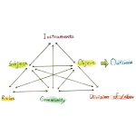
活動理論
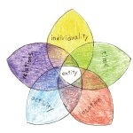
脈絡訪查
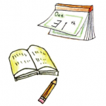
日誌分析
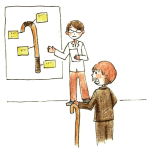
參與式設計
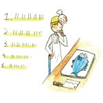
角色扮演
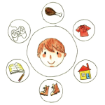
人物誌

快速民族誌
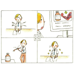
故事板
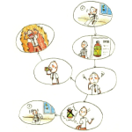
劇本式設計

Ideate-創意發想的13方法
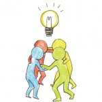
腦力激蕩
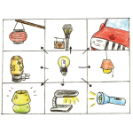
曼陀羅思考法

KJ 法
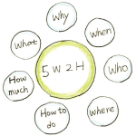
5W2H
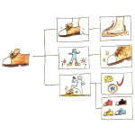
功能分析

Prototype-建立雛型13方法
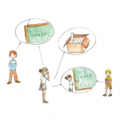
使用案例

設計原則
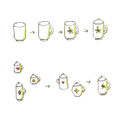
序列與平行的建模
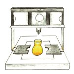
高/低擬真化模型
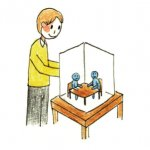
比例建模
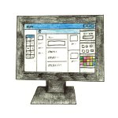
雲端建模服務
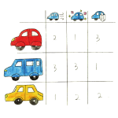
感性工學

Test-設計測試的13方法
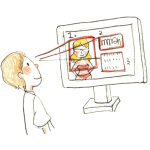
眼動追蹤
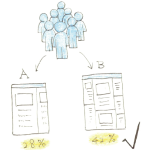
A/B測試
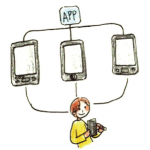
競爭力測試
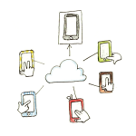
群眾測試
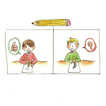
啟發式評估
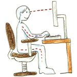
人體工學
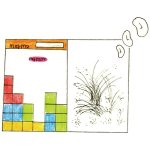
歷史資料分析
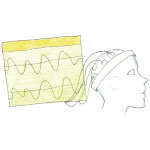
腦波測試
設計思考圖鑑另外提供了App可以下載，方便在手機中隨時察看。也提供了「精裝版」盒裝的實體卡片，方便攜帶使用。

「精裝版實體圖鑑卡」

手機app支援中、英、日、韓、簡中等5種語言


(app網址要等3秒鐘才能點)
在下方留言告訴Acadeck，”你對「設計思考」的心得？”。我們將於2018年2月28日抽出5盒限量的「設計思考精裝版實體圖鑑卡」給留言者。對卡片有任何的想法歡迎聯絡我們。同時，我們在招募卡片共編作者，將這份發展更完整的圖鑑，歡迎加入我們的行列。